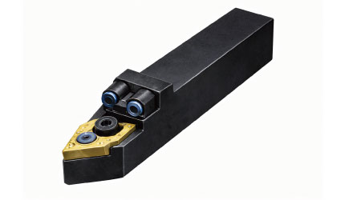
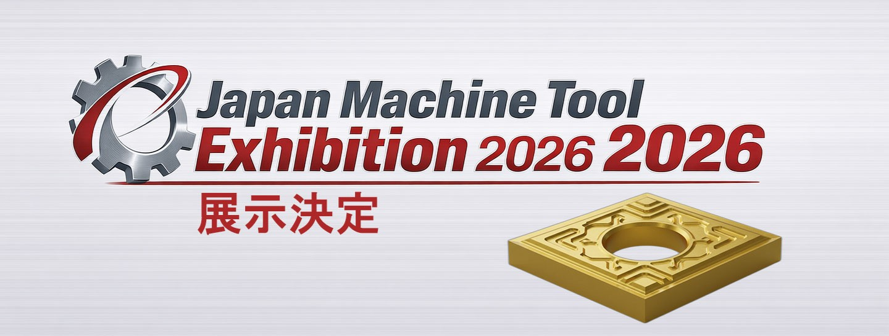
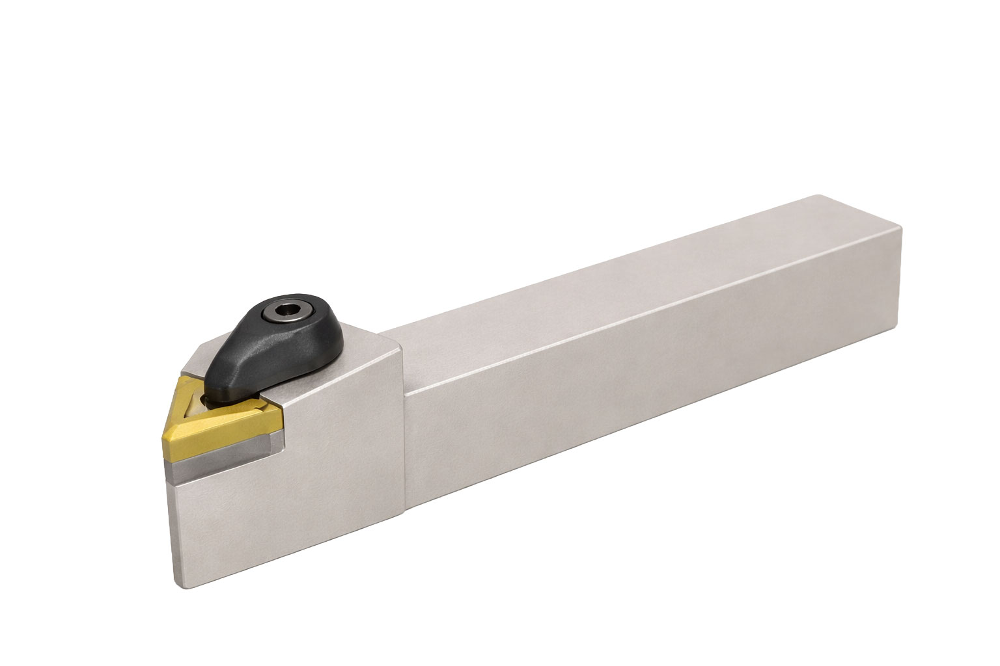
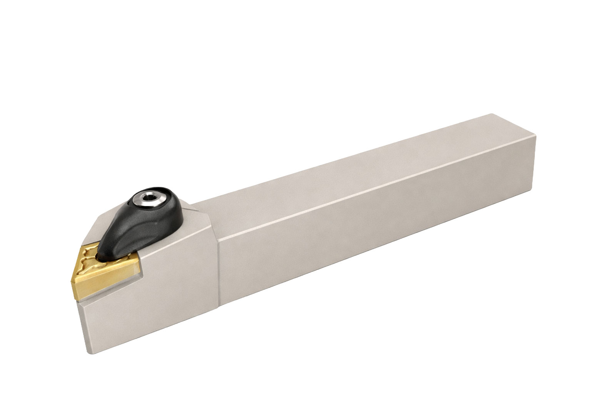
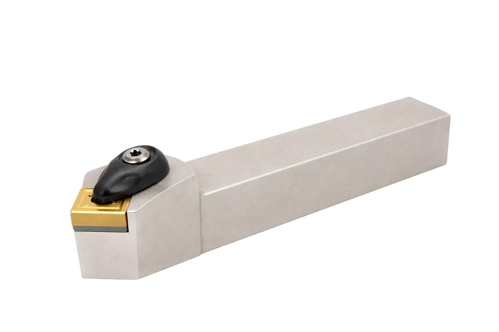
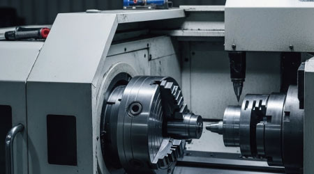
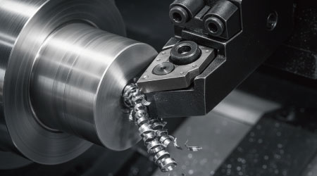

量産加工向け新ホルダーをリリース。クーラントスルー構造により安定した冷却を実現。切りくず排出性の向上と工具寿命の延長を実現しました。


CIP


HOLDER




量産加工向け新ホルダーをリリース。クーラントスルー構造により安定した冷却を実現。切りくず排出性の向上と工具寿命の延長を実現しました。

NC旋盤での技能検定相当形状の連続自動加工を実現。工程停止なしでの加工完了を確認。切りくず排出と工具摩耗の安定性に重点を置き、人手を介さない加工システムを構築しました。

SUS材での6mm肩肉加工をクーラント無供給で安定完了。切りくず排出と刃先安定性を重視した条件での加工検証事例です。